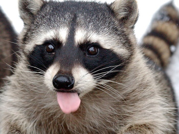

Еноты и разработка никак не связаны между собой, просто на заданную тему я не знаю, что можно написать, а еноты милые.
Итак, Енот-полоскун (далее просто енот) — хищное млекопитающее рода еноты семейства енотовых.
Один из немногих видов, которые процветают в условиях усиления антропогенного воздействия,
выражающегося в постепенном окультурировании угодий. Енот хорошо приживается в местах интродукции,
хотя и является в целом теплолюбивым видом.
Енот-полоскун ростом с кошку. Длина тела 45—60 см, хвоста 20—25 см; масса 5—9 кг.
Лапы короткие, с настолько развитыми пальцами, что следы похожи на отпечаток человеческой ладони.
Енот может передними лапами захватывать и удерживать предметы, в том числе и мыть еду.
Высокая чувствительность лап заменяет дальнозоркому еноту зрение вблизи. Мех у енота густой,
коричневато-серый.
Для енота-полоскуна наиболее пригодны смешанные леса со старыми дуплистыми деревьями и наличием водоёмов или болот. Хвойных лесов, как и лесов, лишённых водоёмов, он избегает. На юге ареала водится на морском побережье. Еноты легко приспосабливаются к антропогенному ландшафту, селятся на окраинах полей, в садах, нередко в городах и пригородах. Жилища (часто несколько) енот устраивает в дуплах. В крайнем случае использует наземные убежища — расщелины в скалах, норы барсуков; сам рыть норы не умеет. Ведёт сумеречно-ночной образ жизни; дневные часы проводит в логове. На промысел выходит с наступлением сумерек, обходя свой участок (радиусом до 1,5 км) в поисках пищи. Енот редко удаляется более чем на 1,5 километра от своего жилища. При этом участки отдельных особей часто перекрывают друг на друга, и, как результат, плотность енота в угодьях может быть довольно высокой.
Енот-полоскун ловко лазает по деревьям; очень цепкие пальцы позволяют ему висеть, зацепившись за горизонтальный сук, или спускаться по стволу вниз головой. Благодаря прекрасному ночному зрению и вибриссам, пучки которых расположены не только на голове, но и около когтей, на внутренней стороне конечностей, на груди и животе, енот уверенно передвигается даже в полной темноте галопом. Единственный представитель семейства енотовых, который на зиму засыпает. Сон неглубокий, прерывистый. В Канаде он продолжается 4—5 месяцев, в южных районах енот часто не засыпает совсем. В крупных дуплах на зимовку собирается иногда до 10 особей.
Енот всеяден. В его питании выражена сезонная смена кормов. Весной и в начале лета основу его рациона составляют животные корма; во второй половине лета и осенью он предпочитает растительную пищу. Основной животный корм енота — насекомые 🐛 и лягушки 🐸, реже рептилии (змеи 🐍, ящерицы 🦎), раки и крабы 🦀, рыба 🐟, грызуны 🐀 и птичьи яйца 🥚. Растительный рацион состоит из ягод, желудей, орехов и фруктов. Перед едой енот полощет корм в воде; отсюда его русское название «полоскун», японское «洗熊» («араигума», досл. «моющий медведь», хотя так же японцы называют и обыкновенного барсука) и латинское видовое lotor. В неволе еноты проделывают эту же операцию даже с идеально вымытой пищей. Бо́льшую часть информации об окружающей среде зверёк получает с помощью осязания. Если еноты живут поблизости от людей, они охотно роются в мусоре в поисках еды или даже берут её прямо «с рук». С дикими енотами контакта лучше избегать, поскольку они могут быть переносчиками различных инфекций и заболеваний.
Енот — очень жизнестойкий зверь. Он невосприимчив ко многим инфекционным и инвазионным заболеваниям и агрессивно защищается от хищников. Однако следует быть осторожным, поскольку еноты сами могут переносить серьёзные инфекционные заболевания. На енотов нападают койоты, волки, рыжие рыси, илька, аллигаторы, совы; на детёнышей — змеи. В Предкавказье численность енотов хорошо регулирует обыкновенный шакал. При этом оба они здесь — инвазивные виды (Пензиков, 1983).
По характеру этот зверёк активен, очень любопытен, драчлив, смел и хитёр. В США и во многих других странах мира енотов иногда держат как ручных животных. Как правило, еноты живут на воле не больше 5 лет. В домашних условиях живут около 20 лет.

Поделись улыбкою своей,
И она к тебе не раз еще вернется. © Крошка Енот